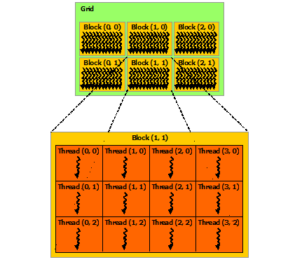

Parallel game programming
开始
你到这里让我快乐我们一起开始
Summary
On this TFG I wanted to find out if parallel programing is and will be used to develop and optimize games. We have this impression because of the fact that nowadays processors improve its power not raising the processing speed but raising the processing units. At the end of the TFG through the development of a windows platform layer we found out that modern low-level APIs give a lot of options to use parallel programming in the form of multithreading of rendering tasks, using SIMD instructions and having the compute pipeline to perform GPUGP tasks. We also found out why the GPU outperforms the CPU at parallel algorithm processing and how we can optimize GPU work focusing mainly on coalesced memory access and memory throughput but also measuring the occupancy and concurrency.
Introduction
Motivation
I have already programmed a couple of game engines but on those I just limited myself to put a bunch of open source libraries together to make them work without optimizing much or knowing how things are working underneath on the platform specific level. Therefore, this TFG is an excuse to learn low-level programing using operating system APIs and general purpose computing on graphics cards (GPUGP) in order to optimize programs on a platform specific level. I think that understanding how things work on such low level will make me a better programmer because I will be able to design better code and spot possible platform specific optimizations even when working with higher level languages.
Also I think that it is important to learn parallel programing because the new hardware every time dedicates more transistors to make more processing units without increasing the instruction processing speed so single thread programs will not be able to take advantage of this new hardware and improve much in performance.
Formulating the problem
Nowadays, new CPUs and GPUs improve its power not raising the instruction processing speed (raising clock frequency) but raising the number of processing units. Therefore, to take advantage of the new hardware in order to improve performance we need to use a multithreaded program. Nevertheless, multithreaded programing adds some extra complexity because threads of the same program share address space and resources like memory. In consequence, we need to synchronize and manage access to memory to avoid problems like race conditions where two or more threads are reading from one memory location while at the same time other threads are writing to the same memory location. Additionally, this synchronization needs to be implemented correctly to avoid more problems like deadlocks where a program can’t continue execution because all threads are blocked waiting one another. Furthermore, another problem we can have with bad synchronization is to actually make the program slower than it originally would be with a single thread because of overhead on thread code generation, a lot of context switches between the threads, blocked threads with bad synchronization… This extra complexity generated when troubleshooting these problems makes the program development slower and more difficult to program, debug and profile. Accordingly, I want to see if multithreading is enforced by modern APIs as a possible optimization and how.
Moreover, threads are not the only way to parallelize a program. CPUs have specific instructions extensions that contain specific instructions targeting specific tasks. One of these instruction sets are the single instruction multiple data(SIMD) vector instructions that enable to perform the same instruction like for example an addition to multiple data at the same time effectively augmenting the throughput of the CPU.For example, we can perform 8 addition instructions on 16 memory locations or we can issue just one instruction that does this same addition but with 2 arrays of 8 entries. Using these instructions can improve the performance of a program greatly however a lot of times they are not used because a program using this instruction sets is not portable to those CPUs that don’t support them like the old models or CPUs from other brands that supports them but use a different instruction set architecture (ISA). Consequently, we need to use runtime function dispatching to execute the functions using these instructions depending if the hardware supports them and if it does not, execute the version that doesn’t use this instruction sets. This instruction sets are also sometimes avoided because they are not supported on a programming language level, you need to use compiler intrinsics or assembly language to access them. With a program that uses this instruction sets people will be able to enjoy the extra performance that their new hardware supports.
Talking about SIMD, most pcs have a coprocessor alongside the CPU designed with this idea in mind called the graphics processing unit (GPU). The main idea of the GPU design that differentiates it with the CPU is to maximize the instruction throughput instead of focusing on instruction latency. On one hand, CPUs dedicates a lot of transistors on its die with caches, branch predictor, out of order execution etc. trying to execute sequences of instructions as fast as possible, leaving them without a lot of space on the die for a lot of execution units(cores). On the other hand, GPUs have a lot of cores to execute a lot of instructions at the same time and a higher memory bandwidth but they don’t have this extra tools and high frequency the CPU has to execute a sequence of instructions as fast as possible. In consequence, GPUs focus on completing the highest number of instructions in a given time excelling at parallel tasks that will take a lot more time to the CPU however, they struggle if the task to perform is not parallelizable. This parallelism makes the GPU very suitable and used for graphics. Although its name (GraphicsPU), it can also be used for other tasks that would greatly benefit from the GPU parallel design against the CPU.
In conclusion, I am trying to implement a simple platform layer that could be the base of a game or a game engine using the most modern APIs provided by the platform to see if it enforces the use of any of the mentioned parallel programming techniques. If they are used, we are going to see their exact implementation and it will mean that the industry also considers parallel programming to optimize in games.
Specific objectives
- Use the CUDA platform layer to learn about GPUGP
- Profile how significant the difference is between a parallel algorithm running on the CPU and on the GPU.
- Optimize a GPU algorithm to fully understand the GPU hardware.
- Use the latest versions of the DirectX API to construct my windows platform layers.
- See how DirectX12 implement GPUGP.
- See what exactly makes DirectX12 so hyped to get better performance than other older APIs like Opengl.
- See if we find an unknown parallel technique while programing the platform layer.
Project scope
This TFG targets anyone interested in the topic of low level C/C++ game and engine development and platform specific optimization targeting mainly pc games on the windows operating system. It also targets people interested in learning GPU programing.
For the platform layer, we will try to make it as much complete as possible in order to see more areas of the game where parallel techniques can be used. At least it has to be complete enough to render geometry to the screen, use input, textures and audio Those are the features the majority of games use and that configure the core of the DirectX multimedia libraries that I want to test.
For the GPU, the most important thing is to create kernels on CUDA, optimize them and compare them to the CPU times. The number of kernels is not important, what is important is to try to touch the majority of areas of GPU hardware. It will also be interesting to see how different the CUDA kernels are compared to the compute shaders of directX 12.
Finally, I will try to see if any of the APIs uses SIMD instructions.
Project development
GPUGP
As mentioned in formulating the problem, GPUs and CPUs are very different because they are designed with different goals in mind (throughput vs. latency). As they are so different, the first task I carried was learning how a GPU works and how to program it. With that goal in mind I decided that the best way to learn it was to make very simple GPU programs using CUDA. CUDA is a C/C++ language extension that allows you to define and execute functions that will run on an nvidia GPU (called kernels). It also provides helper functions to manipulate GPU memory and transferring data between GPU (device) and CPU (host).
The first program I made was the addition of two big vectors.
void addCPU(int* c, const int *a, const int *b, int elementsToAdd)
{
for(int i = 0; i < elementsToAdd; ++i)
c[i] = a[i] + b[i];
}
In a CPU this would be done with a for loop incrementing the index on each iteration and with it accessing an array element by element and performing the addition.
__global__ void addKernel(int *c,const int *a, const int *b)
{
int i = threadId.x;
c[i] = a[i] + b[i];
}
This is the kernel (marked as a kernel (GPU function) using the __global__ definition) that makes the addition on the GPU. Notice that we perform the same addition operation that we did on the CPU function but we get rid of the for loop because the entire function will run multiple times in different GPU threads. As the GPU has many more cores than the CPU, all this threads can execute the same instruction on different cores at the same time. This model the GPU uses comes from the SIMD (single instruction multiple data) and is called SIMT (single instruction multiple thread). To run a kernel, the GPU just spawns a lot of threads on different cores and each thread runs the first instruction of the function at the same time, and after the first one the next one and the next one … until the function ends. This way, maybe we are slower to perform each instruction (latency) but when we finish performing it, it is like having performed a lot of instructions (the same instruction performed a lot of times in every different thread) achieving an amazing throughput and parallelism. This is great for certain types of tasks called embarrassingly parallel like this vector addition that perform the same instruction in different data. Notice on the example kernel that we get the index to the array through a magical variable called threadIdx. This threadIdx variable will automatically get set by the runtime to the index of the current thread running this kernel.
After the vector addition test I did another test with matrix multiplication. In this test I got introduced to the concept of grids, blocks and thread dimensions.
A block is a group of threads and the unit that gets scheduled on the GPU. All the blocks in a kernel form a grid and can be accessed using the blockIdx variable. As the threadIdx variable, it is a 3 dimension variable (x,y,z) because it can be convenient for certain tasks like for example the matrix multiplication to access the data using multiple dimensions.
As mentioned before, the GPU has a lot of cores. All this cores are grouped in different clusters called streaming multiprocessors (SM). Each SM contains cores, a register file with the registers to use for the different cores and cache. To run a certain kernel, the application specifies a grid to the GPU. The GPU then assigns the different blocks to different SM and each block runs until completion. After a block finishes, a SM is freed and another block of threads can get executed on that SM. This way, the more SMs a GPU has the more blocks can run at the same time in parallel and the faster the kernel will complete.

Because of its design, GPUs theoretically can carry parallel tasks a lot faster than CPUs. To see if this is true I also created two programs that do exactly the same task and use the same algorithm but one with the CPU and the other with the GPU. Like this, I am able to benchmark both and compare how significant the difference in performance is. The program is about image processing. It consists on a simple console app that receives an image and outputs the same image but in black and white. The task is embarrassingly parallel because it fits with the SIMD model commented before as we perform the same operation on each texel of the texture. Consequently, I expect it to run much faster on the GPU than on the CPU.
for (unsigned char *p = img, *pg = gray_img; p != img + img_size; p+= channels, pg += gray_channels)
-pg = (unsigned char)(((*p) * 0.299f + (*(p + 1)) * (*(p + 2)) * 0.114f));
__global__ void RGBToGrayScale(const uchar3 *const colorPixels, unsigned char *grayPixels, int rowElements, int colElements)
{
int y = threadIdx.y + blockIdx.y * blockDim.y;
int x = threadIdx.x + blockIdx.x * blockDim.x;
if (y < colElements && x < rowElements)
{
int index = y * rowElements + x;
grayPixels[index] = 0.299f * colorPixels[index].x + 0.587f * colorPixels[index].y + 0.114f * colorPixels[index].z;
}
}
To time both functions I used the QueryPerformanceCounter() and QueryPerformanceFrequency() from the Windows API. I also used Nvidia Nsight Compute to get a more accurate time for the GPU kernel. The test was run on an intel i7-10700k CPU and a Nvidia RTX 2080 Super GPU and I used a (3840x2160)4k and (7680 × 4320)8k resolution textures.

As expected, the GPU was A LOT faster than the CPU. For the 4k texture test, while the CPU took 13 ms on average the GPU only needed 0.3 ms on average to complete the same task (0.12915ms on Nsight compute). Continuing with the 8k texture test, the difference was even bigger. The CPU required 53 ms on average to complete the task while the GPU just needed 0.62 ms to complete it (0.50531ms on nsight compute).
A game has to run at high frames rates if it wants the user to not perceive the visual lag between the frames and also to maintain it responsive to user input. The old standard to make a game playable is 30 fps. Going below that can be noticeable and frustrating to most players. If we want to target that bare minimum of 30 fps we have 33,33 ms to compute each frame. Otherwise, if we target a more acceptable frame rate nowadays like 60 fps we need to compute each frame in 16,66 ms. If for example we want to use a black and white filter when the player is low on health we could use our algorithm on a post processing effect, once the frame has been computed, to turn the output texture to black and white. On one hand, if that output texture is 4k, it would take 13 ms to compute that algorithm on the CPU. Consequently, half of the frame time at 30 fps and nearly all the time at 60 fps would be spent computing the task. Moreover, if this output texture is 8k it takes 53 ms, making the task unachievable even at 30 fps because it nearly doubles the 33,33 ms mark. On the other hand, with the GPU times, the task becomes totally feasible at 4k and also at 8k even at higher frame rates.
The last test I did with CUDA was to try out the shared memory. Each streaming multiprocessor (SM) has shared memory, which is cache memory close to the cores but that can be accessed by the programmer. Contrary to the CPU, here we can take a portion of the cache and declare it as shared memory. It is very useful to avoid a lot of reads to slow main GPU memory, however, all the data we load on the shared memory can only be shared between the threads of the same block because blocks are what get scheduled to run on the different SMs, each one with its cache. In this test I performed a Gaussian blur on an image. To perform a Gaussian blur each texture texel final color is the average of the sum of all the surrounding texels.
__global__ void ChannelUnweightedImageBlurQuad(const unsigned char *const colorPixels, unsigned char *bluredPixels, int rowElements, int columnElemens, int quadDim)
{
int x = blockIdx.x * blockDim.x + threadIdx.x;
int y = blockIdx.y * blockDim.y + threadIdx.y;
gidx = y * rowElements + x;
int cacheX = x - (blockIdx.x * blockDim.y) + quadDim;
int cacheY = y - (blockIdx.y * blockDim.y) + quadDim;
int cacheDimX = (blockDim.x + quadDim * 2);
int cacheIdx = cacheY * cacheDimX + cacheX;
//extern __shared__ to allocate the shared memory size at lunch time with the parametersof the grid and block sizes
extern __shared__ unsigned char cache[];
cache[cacheIdx] = colorPixels[gidx];
if (threadIdx.y == 0)
{
//if (blockIdx.y != 0)
for(int i = 1; i <= quadDim; ++i)
if((gidx - rowElements * i) >= 0)
cache[cacheIdx - cacheDimX * i] = colorPixels[gidx - rowElements * i];
else
cache[cacheIdx - cacheDimX * i] = 255;
}
else if (threadIdx.y == (blockDim.y - 1))
{
//if (blockIdx.y != 0)
for(int i = 1; i <= quadDim; ++i)
if((gidx + rowElements * i) <= 0)
cache[cacheIdx - cacheDimX * i] = colorPixels[gidx - rowElements * i];
else
cache[cacheIdx + cacheDimX * i] = 255;
}
if (threadIdx.x == 0)
{
//if (blockIdx.y != 0)
for(int i = 1; i <= quadDim; ++i)
if((gidx - i) >= 0)
cache[cacheIdx - i] = colorPixels[gidx - i];
else
cache[cacheIdx - i] = 255;
}
}
继续
这是我的第一段落
这个段落很重要
这个段落不太重要但是你能看一下
这个段落没有上面的重要。我们现在不用<em>和<strong>。所以这个段落是最不重要的。 还有不重要的信息